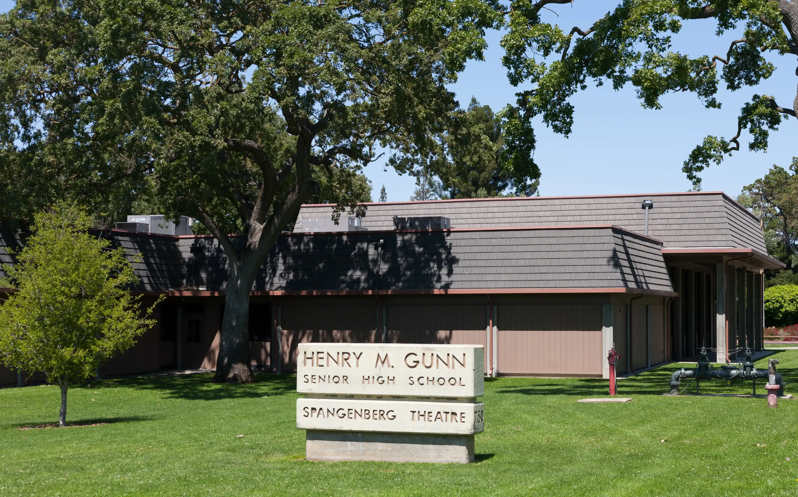
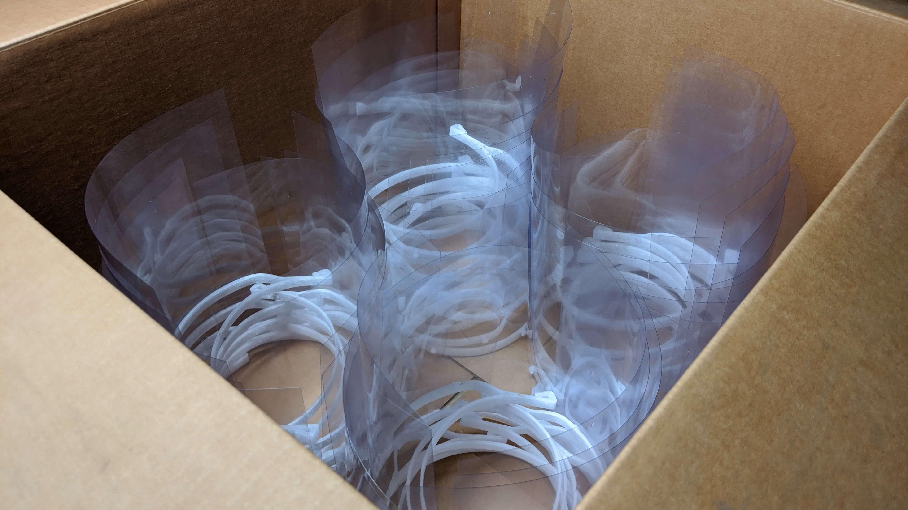

Baycro News
This news page exists to provide our members, donors, and sponsors information on the progress we are making to help others in this time. We hope that it is informative and gives a better view as to what progress is being made by Baycro.
May 3, 2020
April 26th to May 3rd Update
Gunn High School drive cancellation, expansion, and more
Although we were supposed to have a donation drive at Gunn High School, it was cancelled on the school’s order. However, we were still able to collect over a hundred supplies of N95 masks, hand made masks, and face shields. These items will be donated over the coming week to hospitals and elderly homes. In addition, we have also gained new members from multiple schools, and students from Palo Alto High School have also joined.
May 1, 2020
Baycro is Now Collecting 3D Printed Supplies
We have expanded our selection of items to 3D personal protective equipment.
We have now expanded the selection of items we accept in donation drives and direct donations. We are now taking 3D printed equipment, primarily face shields, that will now be distributed to hospitals and shelters. If you are interested in printing for us, check out our 3d printing page. This would not have been possible without Innexgo. A big thank you goes to them for lending us two of their 3D printers as well as other hardware allowing us to get to this stage.